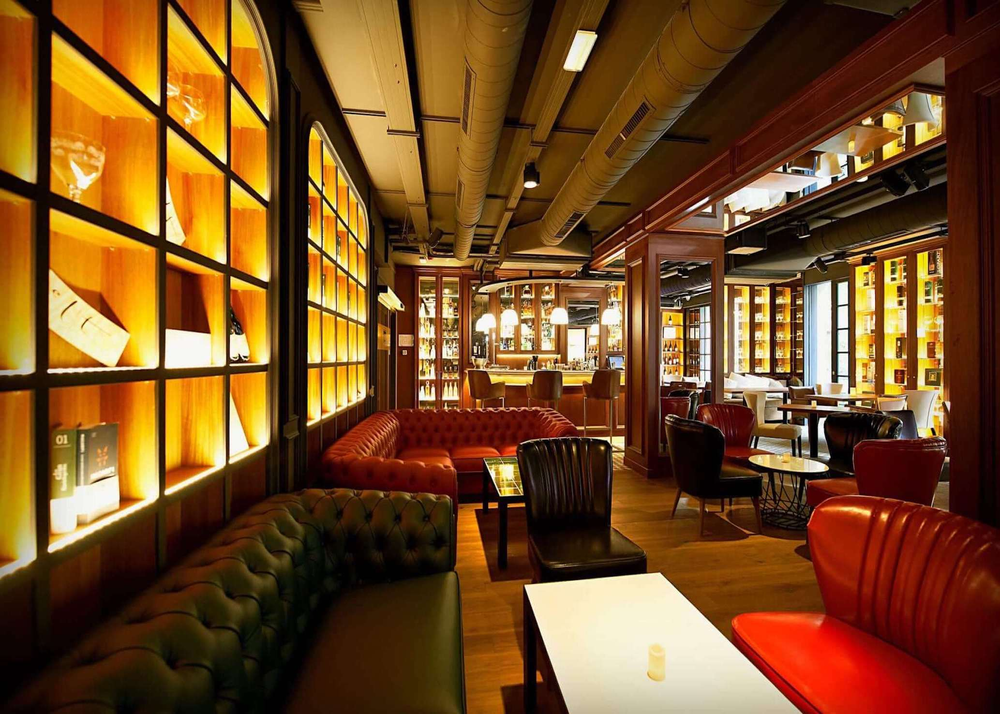
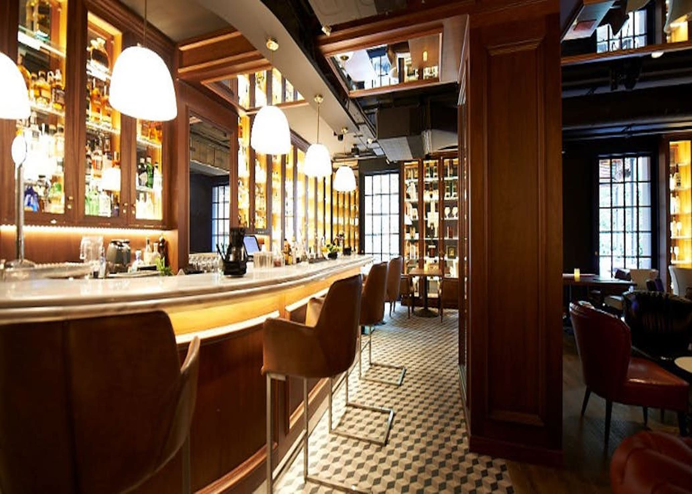
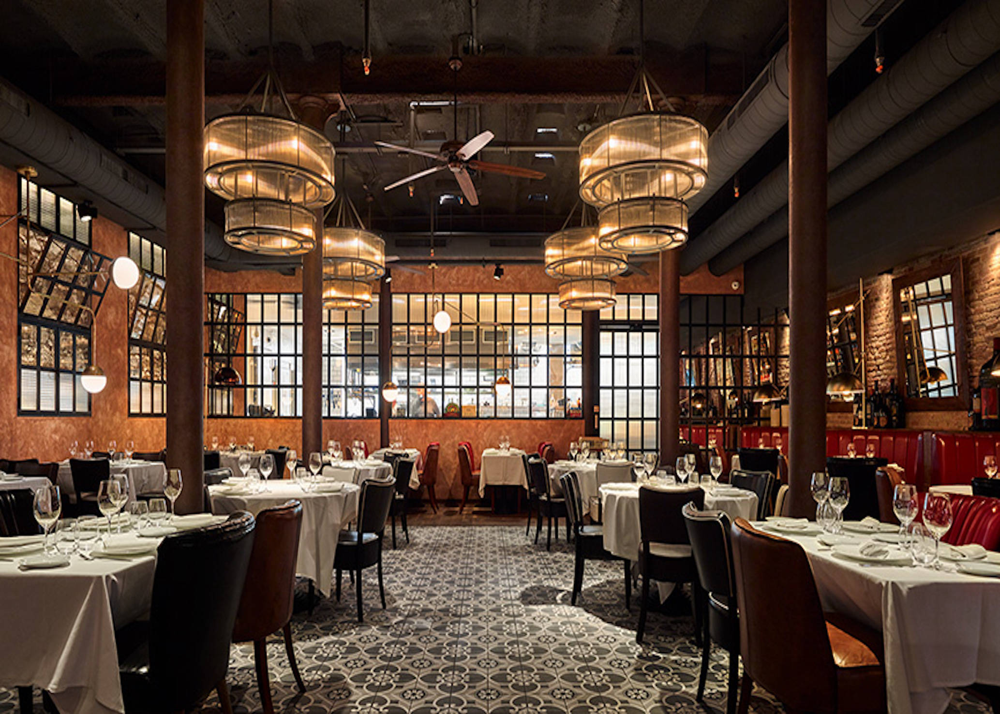
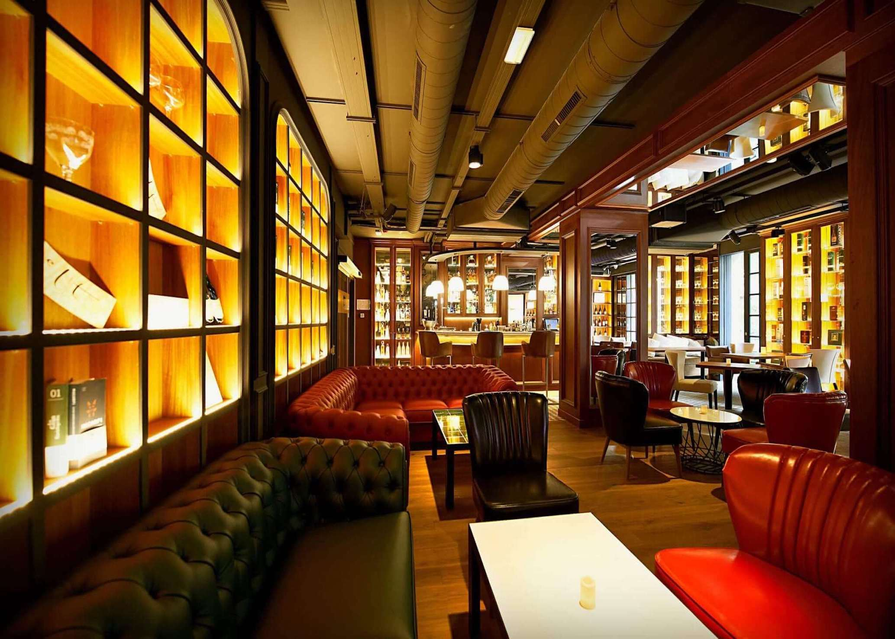
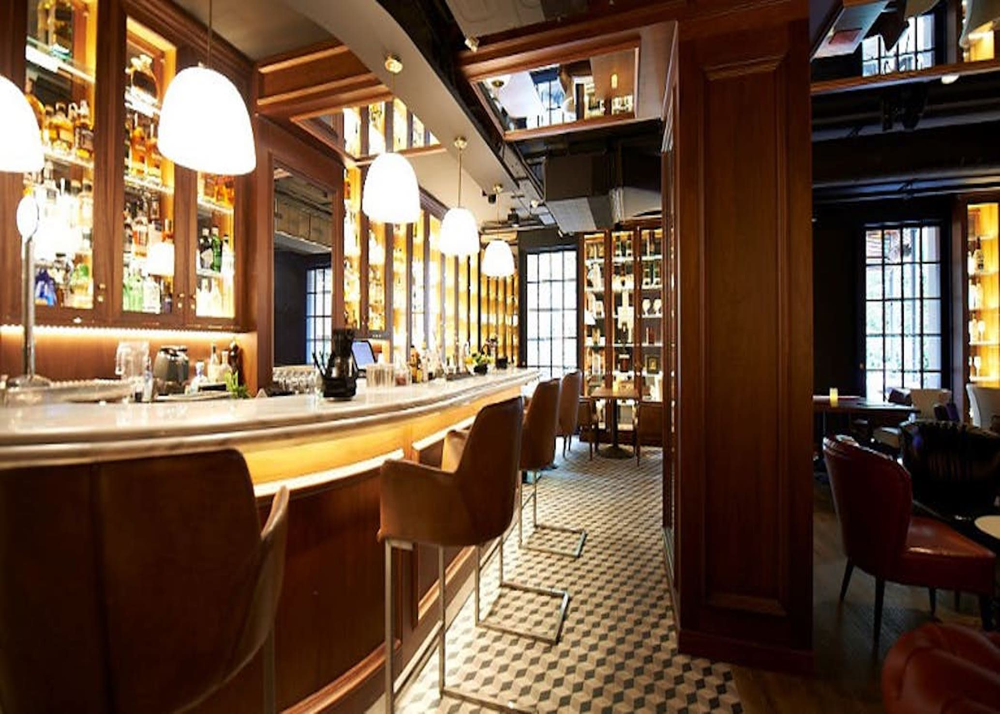
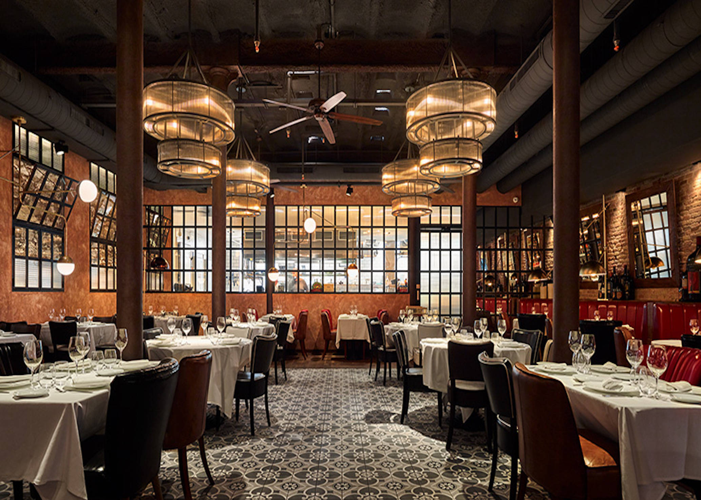
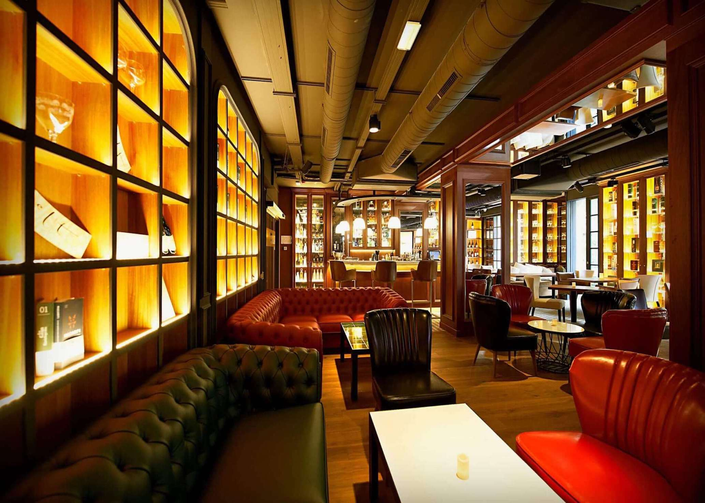
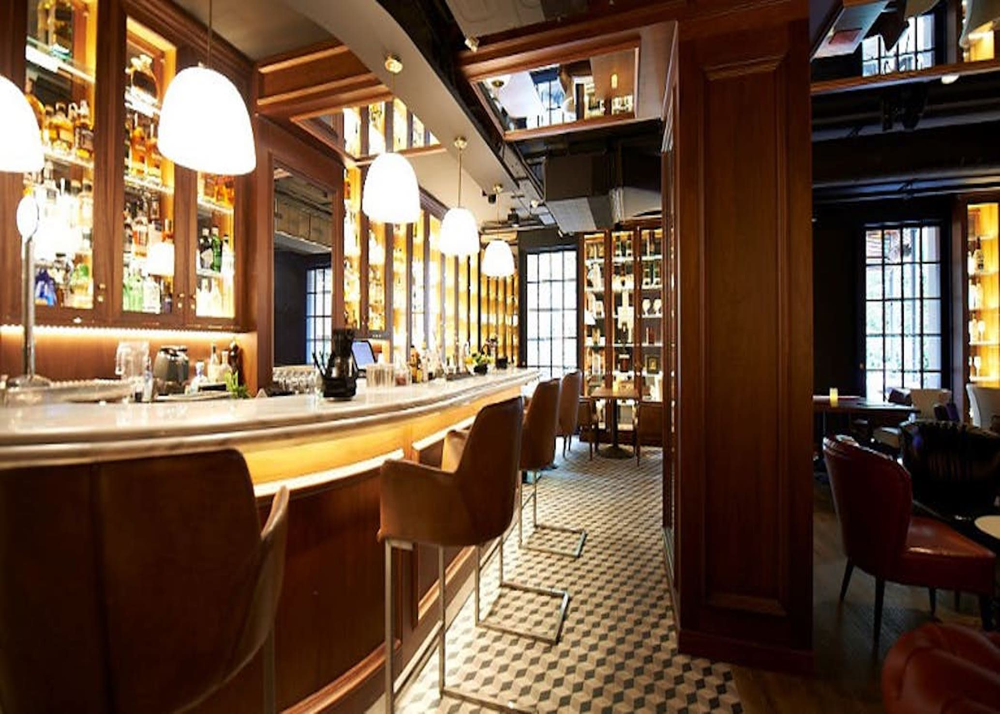
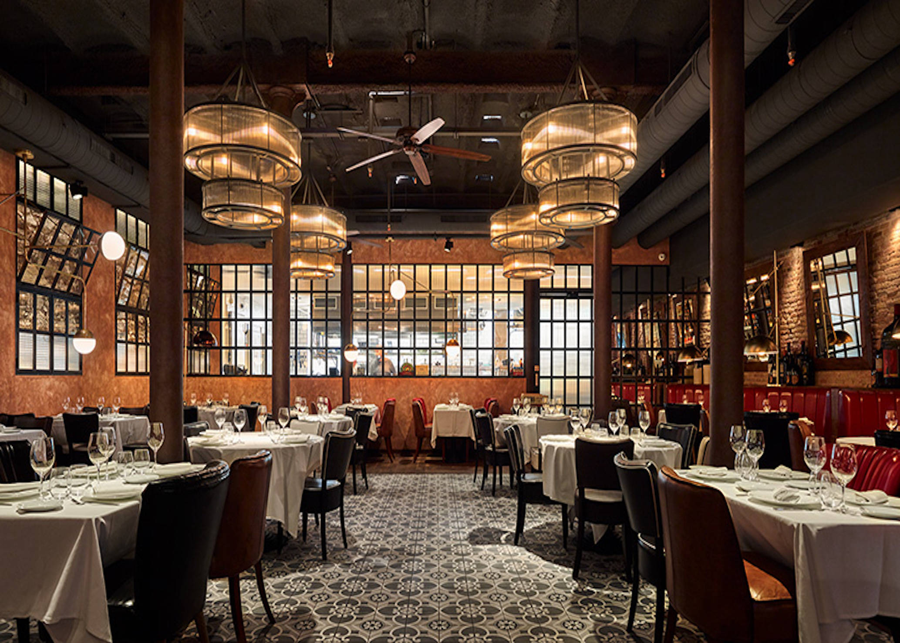

Alba Granados reopens its doors in 2016 with a completely renewed look. The spacious restaurant is divided into two floors: it has an elegant dining room on the ground floor and a fantastic New York style cocktail bar on the first floor, plus an exquisite balcony. Its cuisine is traditional based with current touches and shares prominence with its extensive wine cellar.
The gastronomic offer of Alba Granados is based on a traditional high quality cuisine with signature touches. Its chef, Carlota Claver, from the Hofmann school, masterfully adapts the recipes with a fresh and contemporary twist. In the menu we will find a wide variety of dishes: tapas to share, cold and hot starters, cheeses and Iberian cold cuts, oysters, fresh fish and excellent meat.



Location: City centre
Dining room capacity: 15, 50 and 75 pax
Price level: Medium-high
Style: Seasonal Mediterranean cuisine
Special diets: Available
Handicapped facilities: Yes